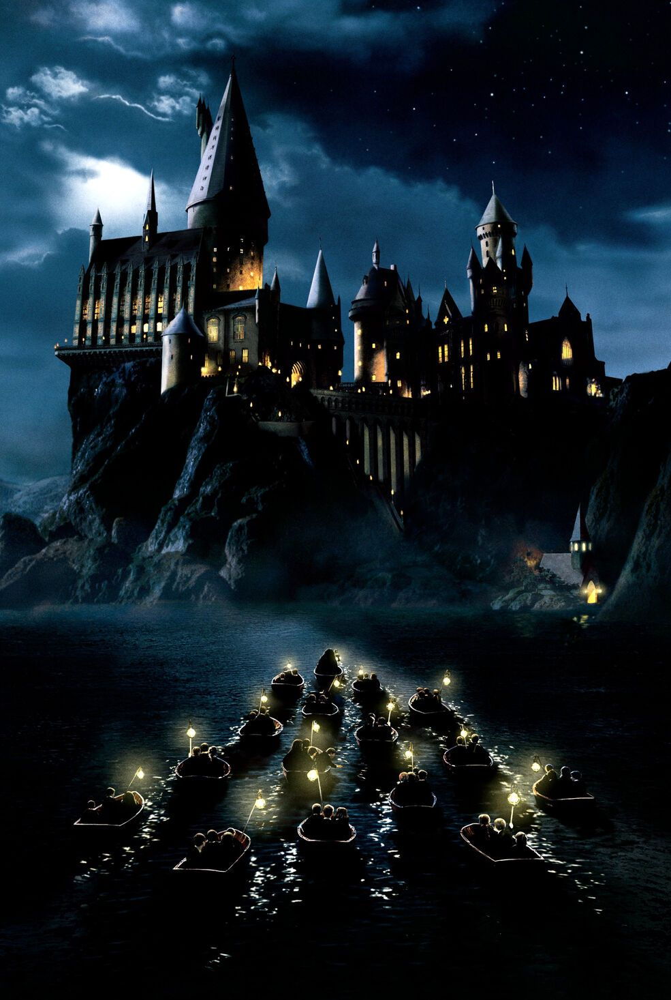

Система обучения в Хогвартсе построена таким образом, что все ученики со временем либо мутируют в ведьмаков, либо погибают в воспитательных целях, либо превращаются в отпетых многолетних хулиганов. По странному стечению обстоятельств, за всю историю школы встречались только второй и третий варианты.
Среди учеников считается, что только в мучениях рождается настоящая, магическая дружба. Поэтому, чтобы подружиться, хогварчане нежно сламывают друг другу руки до крови. Таких друзей называют «сламщиками» и «друзья по крови».
В Хогвартсе очень популярна игра в квача — разновидность салок с кистями (разноразмерными квачами под названием шток, плунжер и шнырь) и тремя заводными мячами.
Во избежание естественного прироста населения мальчики и девочки в Хогвартсе живут в разных помещениях. Мальчикам отводятся спальни на втором этаже здания, а девочкам — кельи в монастыре в Бангладеше.
По единодушной оценке независимых сторонних экспертов, самый неудачный выпускник школы — некий Поттер Г., сделавший головокружительную карьеру девочкой-волшебницей, который так и не стал ни ведьмаком, ни отпетым многолетним хулиганом, оставшись при этом в живых.
Не только картины, но и двери в основном здании замка живут своей жизнью (но это не значит, что они открываются и закрываются когда хотят). Открытие дверей происходит каждый раз в произвольную сторону — от себя или на себя. Именно из-за этого свежеприбывшие нередко зарабатывают шишки на лбу, ушах и разбитые носы. И только развившие аналитический дар предвидения способны избегнуть подобных неприятностей на начальном курсе.